Новости нашей типографии: Новые горизонты с клубом «Прорыв»
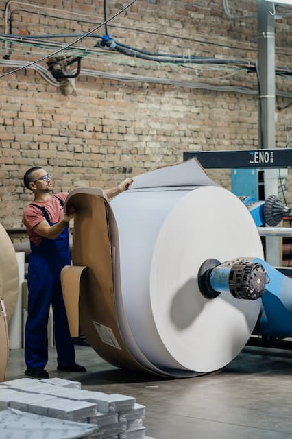
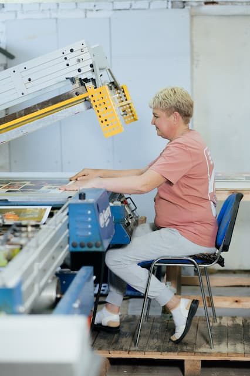
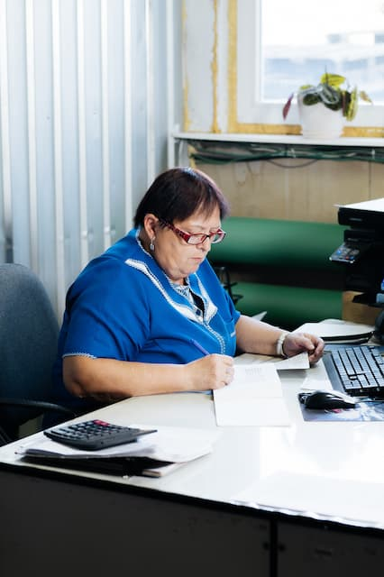
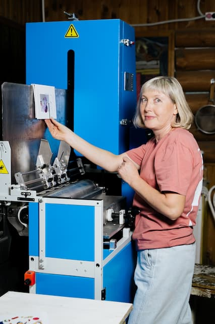
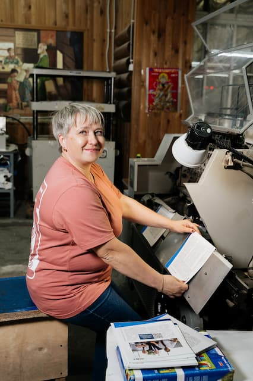
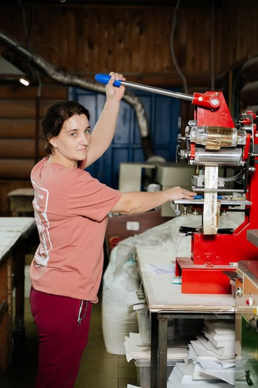
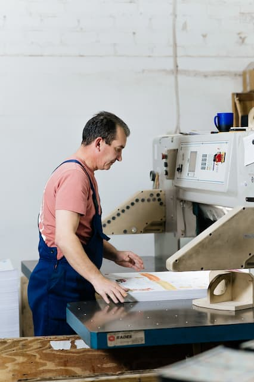
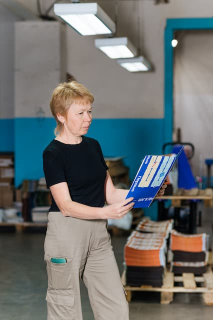
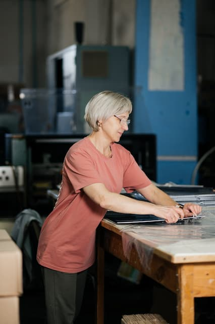
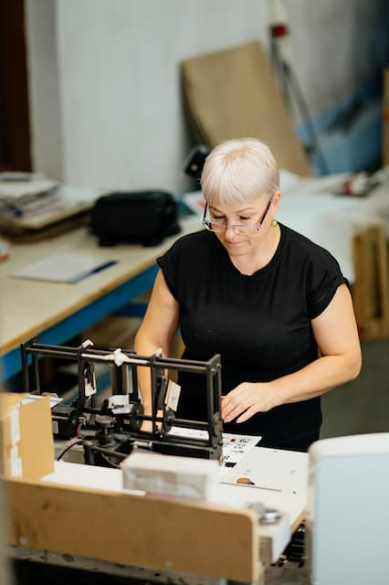
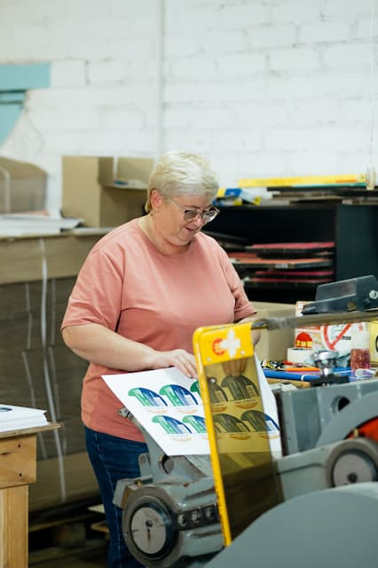
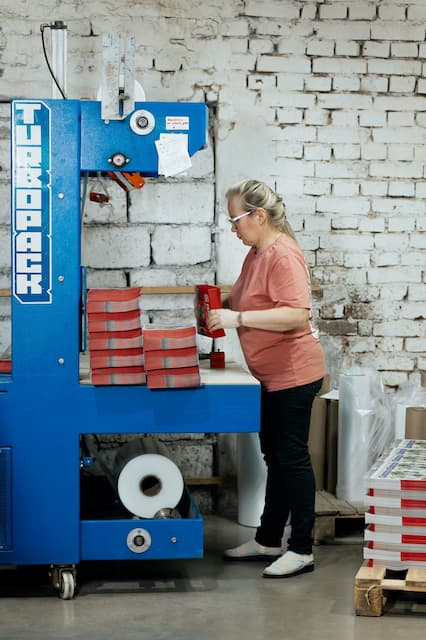
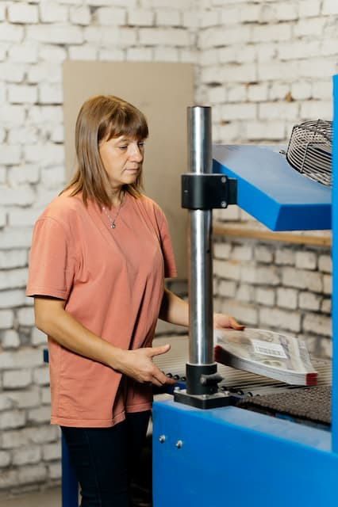
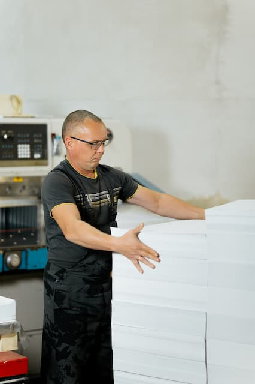
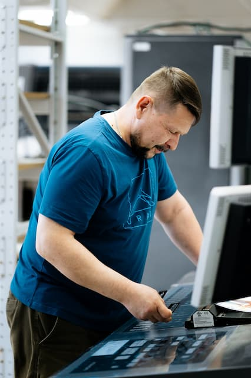
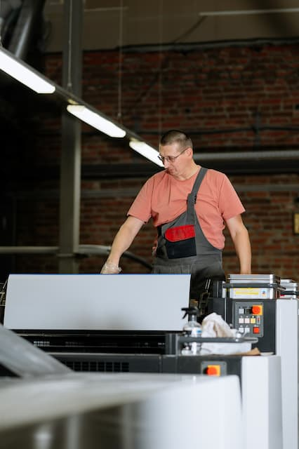
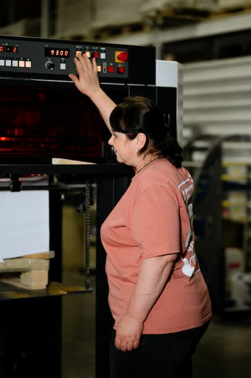
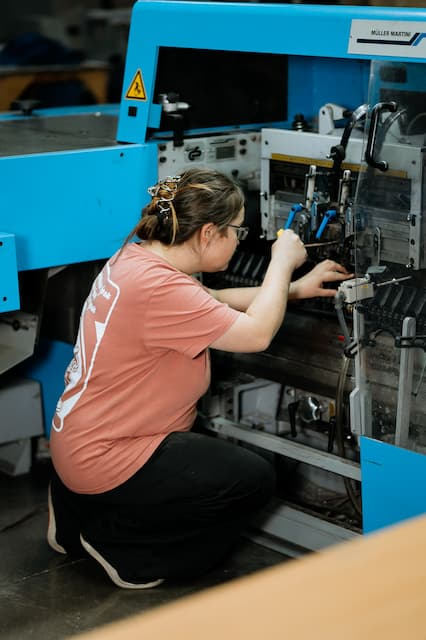
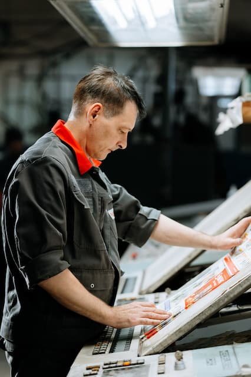
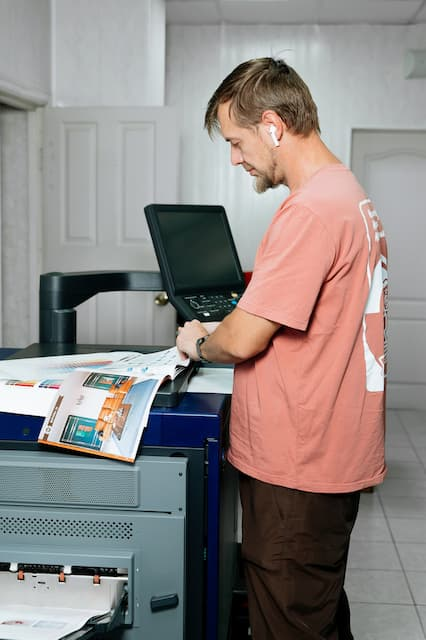
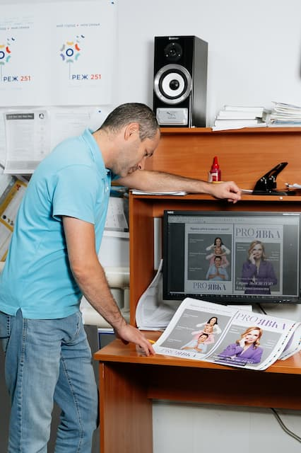
С гордостью сообщаем, что один из наших сотрудников успешно завершил обучение в предпринимательском клубе «Прорыв»,
который фокусируется на принципах бережливого производства. Это событие стало важным этапом для
нашей типографии и открыло новые возможности для развития. Мы рады, что теперь являемся частью этого
клуба предпринимателей Екатеринбурга.
Клуб «Прорыв» ставит перед собой амбициозные цели: создать среду для качественного общения и
кратного роста бизнеса участников. Его миссия заключается в укреплении экономики города и страны
через развитие каждого производства. Мы вдохновлены тем, что в клубе собрались интересные и
энергичные люди, полные энтузиазма, готовые поддерживать друг друга и делиться опытом, направленным
на улучшение производственных процессов и рост бизнеса.
Обучение в клубе позволило нашему сотруднику не только углубить свои знания в области бережливого
производства, но и познакомиться с лучшими практиками, которые можно внедрить в нашу работу. Мы
уверены, что полученные знания и связи помогут нам оптимизировать наши процессы, повысить
эффективность и, в конечном счете, улучшить качество обслуживания наших клиентов.
Наша компания всегда стремится к совершенствованию и постоянному улучшению. Мы намерены максимально
использовать доступные ресурсы, чтобы не только улучшать выполнение наших заказов, но и создавать
более комфортные условия для наших сотрудников. Важно, чтобы каждый член нашей команды чувствовал
себя ценным и вовлеченным в общий процесс. Мы работаем над тем, чтобы улучшить рабочую атмосферу,
оптимизировать рабочие места и процессы, а также развивать корпоративную культуру.
Сотрудничество с клубом «Прорыв» открывает перед нами новые горизонты. Мы уверены, что совместная
работа с другими участниками клуба позволит нам не только обмениваться опытом, но и внедрять
инновационные подходы, что в конечном итоге приведет к значительному росту нашей компании. Мы рады,
что можем учиться у лучших и делиться своими знаниями.
Следите за нашими новостями, чтобы быть в курсе наших достижений и изменений! Мы уверены, что
впереди нас ждет много интересного и полезного, и мы готовы поделиться этим с вами. Мы полны надежд
на будущее и уверены, что вместе с клубом «Прорыв» сможем достичь новых высот в нашем бизнесе!